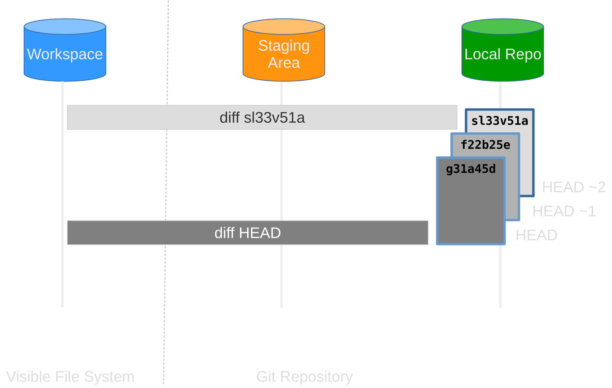
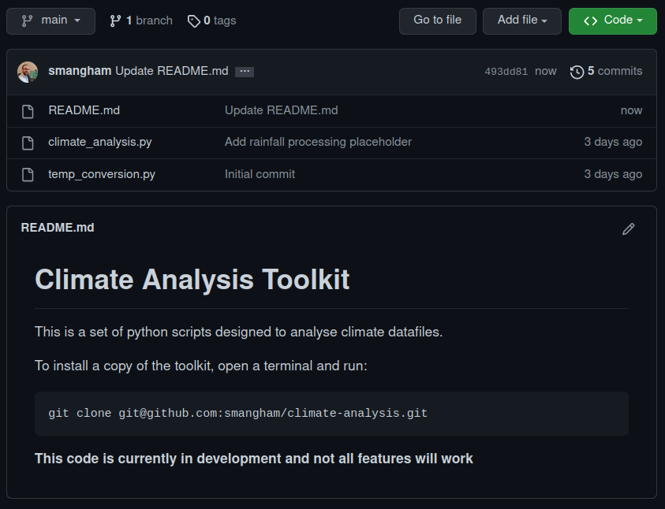
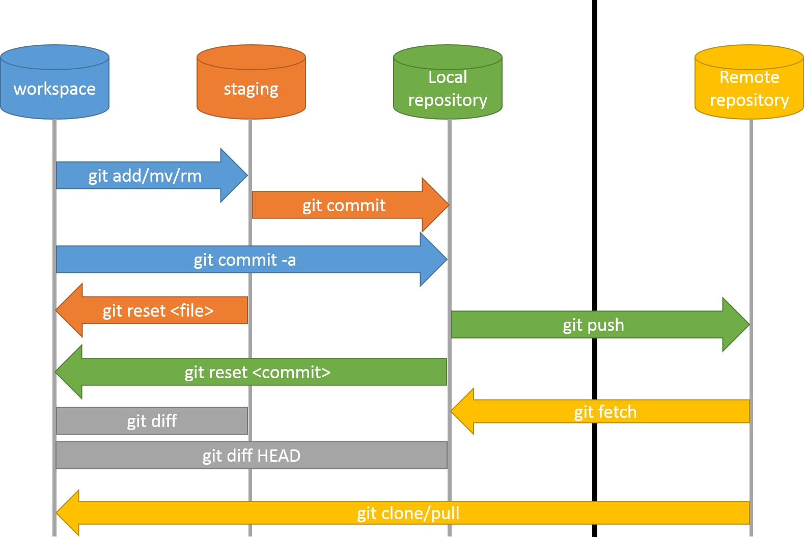
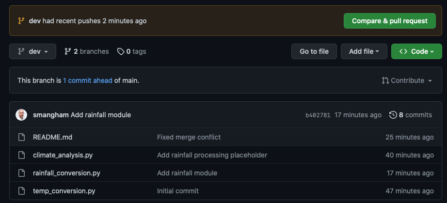
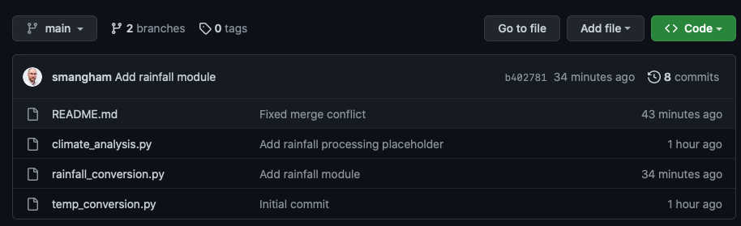
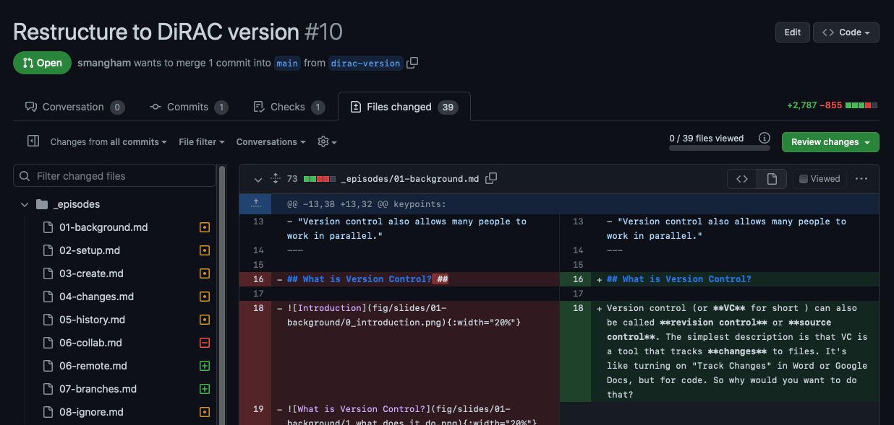

All in One View
Content from What is Version Control
Last updated on 2026-06-18 | Edit this page
Overview
Questions
- What is version control and why should I use it?
Objectives
- Understand the benefits of an automated version control system.
- Understand the basics of how automated version control systems work.
What is Version Control?
Version control (or VC for short ) can also be called revision control or source control. The simplest description is that VC is a tool that tracks changes to files. It’s like turning on “Track Changes” in Word or Google Docs, but for code. So why would you want to do that?
1. A More Efficient Backup

We’ve all been in this situation before - having
multiple nearly-identical versions of the same file
with no meaningful explanation of what the differences
are, just incremental changes in filename (thesis.doc,
thesis_final.doc, thesis_final2.doc…).
If we’re just dealing with text documents, some word processors let us deal with this a little better, like Microsoft Word’s “Track Changes” or Google Docs’ version history. However, research isn’t just Word docs, it’s code and data and diagrams too, and a single paper or project can involve a whole constellation of files, all of which need backing up!
Using version control means we don’t keep dozens of different versions of our files hanging about taking up space, and when we store a revision, we store an explanation of what changed.
2. Reproducibility
When you use version control, at any point in the future, you can retrieve the correct versions of your documents, scripts or code. So, for example, a year after publication, you can get hold of the precise combination of scripts and data that you used to assemble a paper.
Version control makes reproducibility simpler. Without using version control it’s very hard to say that your research is truly reproducible…
3. To Aid Collaboration
As well as maintaining a revison history, VC tools also help multiple authors collaborate on the same file or set of files.
Professional software developers use VC to work in large teams and to keep track of what they’ve done. If you know what changes have been made to each file, you can easily combine multiple people’s changes to a single file. You can also track down where and when (and by who!) bugs in the code were introduced.
Every large software development project relies on VC, and most programmers use it for their small jobs as well.
VC is not just for software: papers, small data sets - anything that changes over time, or needs to be shared can, and probably should be stored in a version control system.
We’ll look at both the backup and collaboration scenarios, but first it’s useful to understand what going on under the hood.
How do Version Control Tools Work?

Version control systems start by storing the base version of the file that you save and then store just the changes you made at each step on the way. You can think of it like storing Lego bricks and the instructions for putting them together - if you start with the first piece, then add each other in turn, you end up with your final document.

Once you think of changes as separate from the document itself, you can then think about taking the same document and adding different changes to it, getting different versions of the document. For example, two users can make independent sets of changes based on the same document.

If there aren’t conflicts, you can even try to combine two different sets of changes together onto the same base document, a process called merging.
Version Control Alternatives
Git is overwhelmingly the most popular version control system in academia, and beyond. It’s a distributed version control system, where every developer in a team has their own full copy of a repository, and can synchronise between them.
It’s partly become such a success thanks to sites like GitHub and GitLab, which make it easy to collaborate on a Git repository, and provide all kinds of extra tools to manage software projects. Plus, GitHub offers free upgraded membership to academics, students and educators - you can apply for them here.
If you’re working on old projects, or ones with very specific needs, you might use Mercurial, another distributed system, or possibly Subversion, a centralised system where there’s a single copy of the repository that everyone connects to.
Because Git is so popular, and making a GitHub account is so easy, we’re going to teach you how to use them.
Graphical User Interfaces
We’re going to teach you how to use Git through GitHub Desktop, a graphical user interface (GUI) that makes it easy to manage your code visually, without needing to type commands. This isn’t the only way to use Git, however. Under the hood, GitHub Desktop is simply a ‘wrapper’ around the command-line version of Git — as are all Git GUIs. If you understand what GitHub Desktop is doing, you’ll find it straightforward to switch to other interfaces, such as the Git tools built into VS Code or JetBrains IDEs.
| SourceTree | Git Kraken | GitHub Desktop |
|---|---|---|
 |
 |
 |
One important exception to be aware of is that, on high-performance computing clusters like Iridis, there’s no graphical environment, so you’ll need to use command-line Git there. The good news is that once you understand the core concepts through GitHub Desktop, the command-line equivalent is much easier to pick up, and you can mix and match, for example using GitHub Desktop on your desktop workstation while using command-line Git on Iridis.
Git GUI Integrations
Most code editors and Integrated Development Environments (or IDEs) integrate Git into their UI,so you can easily see the state of your files and work with your repository. Examples include:
| VS Code | PyCharm & CLion | RStudio/Posit |
|---|---|---|
 |
 |
 |
Others include MatLab, Atom, Sublime Text and Notepad++. The only common IDE with poor Git support is Spyder!
- Version control is like an unlimited ‘undo’.
- Version control also allows many people to work in parallel.
Content from Setting Up Git
Last updated on 2026-06-18 | Edit this page
Overview
Questions
- How do I get set up to use Git?
- How do I set up my account on GitHub?
Objectives
- Install GitHub Desktop.
- Sign in to GitHub through GitHub Desktop.
- Understand how GitHub Desktop configures your Git identity.
Get Started
We’ll start by exploring how version control can be used to keep track of what one person did and when.
First, you’ll need to install GitHub Desktop. If you have not already, download it from desktop.github.com and run the installer.
Setting Up GitHub
In order to make sure all our work is backed up online, as well as making it easy to share with collaborators, we’re going to link our version control content to GitHub. You’ll need to create an account there. As your GitHub username will appear in the URLs of your projects there, it’s best to use a short, clear version of your name if you can.
Other Platforms
There are other repository hosting sites like GitHub - Southampton has its own instance of GitLab that’s only accessible to Southampton user accounts. We’ll use GitHub today, as it’s the easiest one to use if you want to share your code with collaborators from outside the University - getting them access to the Southampton GitLab can be difficult! Both GitHub and GitLab have the same features, though some menu names will be different.
Setting Up GitHub Desktop
When you open GitHub Desktop for the first time, it will walk you through signing in to GitHub. Click Sign in to GitHub.com and this will open a browser window where you can login to your account and authorise GitHub Desktop.
If you’re not prompted to login to your GitHub account, go to the File menu and click Options.

Then, in the Options window, on the Accounts pane, click “Sign into GitHub.com”

Once signed in, GitHub Desktop will ask you to configure Git. It pre-fills your name and email address from your GitHub account. These are what Git uses to record who made each change.
Check the details are correct, then click Finish.
What’s Happening Under the Hood
GitHub Desktop automatically handles two things that you’d otherwise have to do manually on the command line:
Your Git identity: GitHub Desktop sets your name and email for you. The command-line equivalent would be:
BASH
$ git config --global user.name "Firstname Surname"
$ git config --global user.email "fsurname@university.ac.uk"Authentication: GitHub Desktop manages its own secure credential storage, so you don’t need to set up SSH keys manually to work with GitHub. If you later want to use command-line Git (for example, on a high-performance computer like Iridis), you’ll need to set these up separately.
Before moving on, make sure you’ve:
- Created a GitHub account.
- Installed GitHub Desktop.
- Signed in and confirmed your Git identity is configured.
- GitHub Desktop handles Git configuration and authentication automatically when you sign in.
- The name and email GitHub Desktop configures are used by Git to record who made each change.
- You need a GitHub account to use GitHub Desktop.
Content from Creating a Repository
Last updated on 2026-06-18 | Edit this page
Overview
Questions
- How do I create a version control repository?
- Where does Git store information?
Objectives
- Create a repository from a template.
- Clone and use a Git repository with GitHub Desktop.
- Describe the purpose of the
.gitdirectory.
Creating a Repository
Now let’s create a new repository for us to work on.
For convenience, we’re going to work with some pre-existing template code that’s already stored in a repository. The first thing we need to do is create our own copy of that template, which we can do on GitHub.
Go to our template repository and select Use this template:

We should get prompted to give details for what we’d like our copy of
the template to be called. As this demo code is for analysing climate
data, we’ll name our copy of it climate-analysis. We also
want it to be public, so anyone can see and copy our code:

Public or Private?
GitHub will allow you to create private repositories, so only people you specify can access the code, but it’s always best to keep your code public - especially if you’re going to use it in a paper! Code that generates or analyses data is a fundamental part of your method, and if you don’t include your full method in papers your work can’t be reproduced, and reproducibility is key to the scientific process. It’s a good idea to keep your repositories public unless you’ve got a strong reason, like embargoes imposed by industrial partners.
A major advantage of this is if you leave academia, or you switch institution and forget to update the email on your GitHub account before you lose your old one, your work won’t be lost forever!
After a brief wait, GitHub will have created a remote repository - a copy of the files and their history stored on GitHub’s servers.
Cloning the Repository
In the File menu, click Clone Repository

Click the GitHub.com because this is the location of the repository you want to clone.

From the list of repositories, click the repository you want to clone. In this case climate-analysis.

To select the local directory into which you want to clone the repository, next to the “Local Path” field, click Choose… and navigate to the directory.

At the bottom of the window, click Clone
Creating Repositories Locally
We’ve shown you how to create a repository on GitHub and then clone it, but you don’t have to do it that way.
If you already have a folder of code on your computer that you want to put under version control, you can use File > Add Local Repository in GitHub Desktop. If the folder isn’t already a Git repository, GitHub Desktop will offer to initialise it as one for you.
You’ll then see a Publish repository button in GitHub Desktop, which will create the matching remote repository on GitHub and link everything up in one step.
Exploring a Repository
Once cloning is complete, GitHub Desktop will show you your new repository. To see the actual files, click Repository then Show in Explorer (Windows) or Show in Finder (Mac).

You should see the two Python files that make up our climate analysis code:
climate_analysis.py temp_conversion.pyDon’t worry, you don’t need to know Python to follow along.
The folder looks like any other on your computer, nothing obviously
special about it. However, if you turn on hidden files
in your file explorer, you’ll spot a hidden folder called
.git:

Git stores all its information about the project in this
.git directory. If we ever delete it, we will lose the
project’s history. GitHub Desktop manages this folder for you — you
should never need to touch it directly.
Check Status
Switching back to GitHub Desktop, you’ll notice the Changes tab on the left is empty, with a message like “No local changes”:

This means the files on your computer currently look exactly the same as the last snapshot stored in the repository. In other words, there’s nothing new to record yet.
You’ll also notice the current branch is shown at the top of the window as main. A branch is an independent line of development; we only have one at the moment.
Branch Names
In this workshop, we have a default branch called main. In older versions of Git, new repositories had a default branch called master, and you’ll still see master used in many examples online. Don’t worry, branches work the same regardless of what they’re called!
Before moving on, make sure you’ve:
- Created your copy of the template repository on GitHub.
- Cloned it to your local machine using GitHub Desktop.
- GitHub Desktop’s Clone feature downloads a remote repository and links it to your local copy automatically.
- Git stores all of its repository data in the hidden
.gitdirectory.
Content from Tracking Changes
Last updated on 2026-06-18 | Edit this page
Overview
Questions
- How do I track the changes I make to files using Git?
Objectives
- Go through the modify-stage-commit cycle for one or more files.
- Describe where changes are stored at each stage in the modify-stage-commit cycle.
Tracking Changes
We’ve got a repository now containing a few pre-existing files - so
let’s add one more. You might remember GitHub suggesting we add a
README.md to let people know what our code is about, so
let’s do that now.
Creating a New File
Open your repository folder in your text editor.
The easiest way to do this is via GitHub Desktop: go to Repository > Open with….
Select your preferred text editor or Integrated Development Environment (IDE) from the dropdown list.
Create a new file called README.md and add the
following:
# Climate Analysis Toolkit
This is a set of python scripts designed to analyse climate datafiles.Save the file. Our description is a bit brief, but it’s enough for now!
TODO: For learners without an IDE installed, give the option to add a txt/md file using notepad.
Untracked Changes
Switch back to GitHub Desktop. The Changes tab on
the left now shows README.md with a small green plus sign
next to it, meaning Git has spotted a new file it hasn’t seen
before:
TODO: 
The panel on the right shows a preview of the file with new content highlighted in green.
You’ll also notice the file is already checked (the checkbox next to its name is ticked). Only checked files will be included in your next commit.
Initial Commit
Now we’re ready to commit the first snapshot of our repository to Git. At the bottom of the Changes panel, you’ll see a Summary field and an optional Description field:
TODO: 
The Summary is your commit message, which should be short and descriptive:
Add a basic readme fileGood commit messages start with a brief (<50 characters) but descriptive summary of changes made.
If you want to go into more detail, use the Description field below.
Once you’ve entered a summary, click Commit to main:
TODO: 
When we commit, GitHub Desktop takes everything we’ve
checked and stores a permanent snapshot inside the
.git directory. This snapshot is called a
revision, and is assigned a unique short identifier
(like fa90884).
After committing, the Changes tab will be empty again as there are no local changes.
The Staging Area
The checkboxes in GitHub Desktop represent Git’s staging area. This is a holding space where you assemble the changes you want to include in your next commit, before actually committing them.
-
Checking a file adds it to the staging area
(equivalent to
git addon the command line) -
Clicking Commit saves everything in the staging
area as a new revision (equivalent to
git commit)

What’s the Point of the Staging Area?
Why do we have this two-stage process, where we stage changes, then commit them?
Among other reasons, it lets you bundle together a lot of related
changes in one go. If you renamed a variable used across multiple files
(e.g. from t to temperature), you’d need to
update all those files together for the change to make sense. Committing
file-by-file would leave you with a lot of broken intermediate versions.
The staging area lets you bundle all those small
changes into one coherent commit.
GitHub Desktop checks all changed files by default — but you can uncheck individual files (or even individual lines, using partial staging) to hold them back for a separate commit.
Review the Log
To see what we’ve done recently, switch to the History tab:
TODO: 
The History tab lists all commits to the repository, most recent at the top. For each commit, you can see:
- The commit message (summary)
- The author and timestamp
- The short commit identifier
(e.g.
fa90884) - Whether the commit has been pushed to GitHub.
Commits still only on your machine are shown as being ahead of
origin/main
Click any commit to see a diff of exactly what changed in that snapshot.
Modifying a File
Now suppose we modify an existing file. Open
climate_analysis.py in your text editor and add a
docstring at the very top of the file:
Save the file and switch back to GitHub Desktop. The Changes tab now
shows climate_analysis.py with a yellow M
badge, meaning it has been Modified:
TODO: 
Review Changes and Commit
It is good practice to always review our changes
before committing them. Click on climate_analysis.py in the
Changes panel to see its diff — a view of exactly what
has changed. Additions are highlighted in green and
deletions in red:
TODO: 
GitHub Desktop’s visual diff is much easier to read than the equivalent command-line output, making it easy to catch accidental changes before they’re committed.
What About Jupyter Notebooks?
Git works best with plain text files containing just code (or data). Jupyter Notebooks store code, outputs, and metadata together in a complex JSON format, which can make diffs hard to interpret — even in GitHub Desktop’s visual diff view.
Fortunately, the nbdime Python package provides much cleaner diff views for notebooks, and can integrate with GitHub Desktop.
If you have large chunks of code in your notebooks, once you’re
confident they’re correct it’s best to split them out into
.py files and import them back in. It makes them work
better with Git, and also makes them easy to reuse — so you don’t keep
copy-pasting them between files!
After reviewing the change, enter a commit message:
Add docstringand click Commit to main.
Selectively Staging Changes
GitHub Desktop checks all changed files by default. But what if you’ve changed several files and only want to commit some of them?
Simply uncheck the files you’d like to leave out — they’ll keep their changes and remain in the Changes panel, ready to be committed separately later.
You can even stage individual lines within a file: right-click any line in the diff view and select Stage Line. This is useful when you’ve made several unrelated tweaks to one file and want to commit them separately.
Git requires us to stage files (check them) before committing them, because we may not want to commit everything at once. For example, suppose we’ve fixed a bug in some existing code, but also written new code that’s not ready to share yet. We can stage and commit just the bug fix, leaving the work-in-progress for a later commit.
One More Change
We want to remind ourselves of some changes we need to make to a
file. Open climate_analysis.py in your text editor and add
a line at the end saying:
Then review your changes in GitHub Desktop’s diff view, and commit them with the message “Add rainfall processing placeholder”.
When you’re done, the Changes tab should show “No local changes”.
Open climate_analysis.py in your text editor, add the
TODO line at the end, and save.
Switch to GitHub Desktop — the Changes tab will show
climate_analysis.py as modified. Click on it to review the
diff; you should see the new comment line highlighted in green at the
bottom of the file.
Make sure the file is checked, then enter the summary:
Add rainfall processing placeholderClick Commit to main. The Changes tab should now be empty.
Now we’ve got the basic loop of using Git sorted — we make changes, review them in the diff view, stage what we want with the checkboxes, then create a new commit with a descriptive message.
But What Do We Add?
We’ve gone over how you add to a repository, but what do you add? Generally, you make one repository per project, paper or piece of software. Then, you add things like:
- Your code.
- Configuration files for other software.
- Documentation, diagrams, or LaTeX manuscripts.
- For software, commonly-used, small-ish (megabytes) data files - e.g. lookup tables of atomic weights.
- For projects or papers, possibly the output files from software you’ve run - e.g. the results of an analysis.
Repositories shouldn’t really be bigger than 1GB. If you store lots of different projects in one repository, it makes the history much less useful.
You don’t add things that are large, and where the different versions can’t really be meaningfully compared:
- Large data files - e.g. 10s of MB of sensor readings, survey
results, observations.
- These don’t usually change, and if they do, you can’t really compare the files themselves.
- Large output files - e.g. 10s of MB of simulation outputs, or
processed data.
- These don’t need to be stored, as you can recreate them at any time from the inputs.
- If they’re large, you can’t meaningfully compare them.
If you need to store and share data, rather than code & documentation, you can use Southampton’s ePrints repository - see the Library’s Research Data Management pages. Check your field’s standards first, though. Many fields have common, centralised places to store data to make it easier to find and use.
There’s also Git Large File Storage, but GitHub limits the size of files you can store using it. There’s a guide on large files and how to use Git Large File Storage on GitHub’s website. We’ll introduce how to ignore files later on.
- GitHub Desktop’s Changes tab shows new, modified, and deleted files in your repository.
- The checkbox next to each file controls whether it will be included in the next commit — this is the staging area.
- A commit permanently records all staged (checked) changes as a snapshot in the repository.
- GitHub Desktop’s diff view shows exactly what has changed in each file, with additions in green and deletions in red.
- Write commit messages that accurately describe your changes.
- The History tab lists all commits made to the repository, including which have been pushed to the remote.
Content from Exploring History
Last updated on 2026-06-18 | Edit this page
Overview
Questions
- How can I review my changes?
- How can I recover old versions of files?
Objectives
- Identify and use Git revision numbers.
- Compare files with previous versions of themselves.
- Restore old versions of files.
Exploring History
We’ve seen that git log gives us some information on
what commits were made when, but let’s look a bit deeper at the
specifics:
OUTPUT
commit f15ad111042cee7492f40ad6ff0ec18588fce753 (HEAD -> main)
Author: Sam Mangham <mangham@gmail.com>
Date: Wed Mar 30 17:15:47 2022 +0100
Add rainfall processing placeholder
commit 6aeaf44173344939e9994d7ccb5512fc5b26c211
Author: Sam Mangham <mangham@gmail.com>
Date: Wed Mar 30 17:14:14 2022 +0100
Add Docstring
commit 503f02b5f51d5622121e204494dfabc9b2ae7410
Author: Sam Mangham <mangham@gmail.com>
Date: Wed Mar 30 17:12:02 2022 +0100
Added a basic readme file
commit 499b6d18b36a25d3f5ab9be1b708ea48fef1dd65 (origin/main, origin/HEAD)
Author: Sam Mangham <mangham@gmail.com>
Date: Wed Mar 16 14:19:13 2022 +0000
Initial commitWe can see commits identified by long IDs, but also HEAD at the top of the log. HEAD is the name used to refer to the most recent end of the chain of commits to our local repository.
Relative History
What if somehow we’ve introduced a bug, and we want to see what’s changed between our latest version of the code and the copy that was working last commit, or a few commits ago? Which lines did we edit, and what did we add?
We can use git diff again to look for differences
between files, but refer to the versions of the files as saved
in older commits using the notation HEAD~1,
HEAD~2, and so on to refer to the commits. We can refer to
previous commits using the ~ notation, so
HEAD~1 (pronounced “head minus one”) means “the previous
commit”, while HEAD~123 goes back 123 commits from the
latest one.
OUTPUT
diff --git a/climate_analysis.py b/climate_analysis.py
index d5b442d..c463f71 100644
--- a/climate_analysis.py
+++ b/climate_analysis.py
@@ -26,3 +26,5 @@ for line in climate_data:
kelvin = temp_conversion.fahr_to_kelvin(fahr)
print(str(celsius)+", "+str(kelvin))
+
+# TODO: Add rainfall processing codeSo we see the difference between the file as it is now, and as it was the commit before before the latest one.
OUTPUT
diff --git a/climate_analysis.py b/climate_analysis.py
index 277d6c7..c463f71 100644
--- a/climate_analysis.py
+++ b/climate_analysis.py
@@ -1,3 +1,4 @@
+""" Climate Analysis Tools """
import sys
import temp_conversion
import signal
@@ -25,3 +26,5 @@ for line in climate_data:
kelvin = temp_conversion.fahr_to_kelvin(fahr)
print(str(celsius)+", "+str(kelvin))
+
+# TODO: Add rainfall processing codeAnd here we see the state before the last two commits, HEAD minus 2.
Absolute History
What about if we want to compare our version of the code to the
version from last month, or from the version we used to make a paper
last year? Calculating the number of commits just isn’t realistic -
it’ll change all the time as we keep working on the code. Instead, we
can refer to specific revisions using those long
strings of digits and letters that git log displays.
These are unique IDs for the changes, and “unique” really does mean unique: every change to any set of files on any machine has a unique 40-character identifier. (A SHA-1 hash of the new, post-commit state of the repository).
If we scroll down to the bottom of the git log output,
we can see the ID for our first commit. In the example above, it’s
499b6d18b36a25d3f5ab9be1b708ea48fef1dd65 (but yours
will be different!). However, 40 characters just isn’t very
practical to type out, so you can use however much of an ID you need to
pick out a single, unique commit. By default, Git suggests you use the
first seven characters.
Exploring Absolute History
Using unique commit IDs, get a summary of all the changes you’ve made
to the climate_analysis.py file since the initial
commit.
We can use git log to get a list of all of our commits
we’ve made:
OUTPUT
[snipped for space]
commit 499b6d18b36a25d3f5ab9be1b708ea48fef1dd65 (origin/main, origin/HEAD)
Author: Sam Mangham <mangham@gmail.com>
Date: Wed Mar 16 14:19:13 2022 +0000
Initial commitThen, we can take the first 7 characters of the commit ID of the
initial commit, and use them with git diff:
OUTPUT
diff --git a/climate_analysis.py b/climate_analysis.py
index 277d6c7..6f8ed8a 100644
--- a/climate_analysis.py
+++ b/climate_analysis.py
@@ -1,3 +1,4 @@
+""" Climate Analysis Tools """
import sys
import temp_conversion
import signal
@@ -25,3 +26,5 @@ for line in climate_data:
kelvin = temp_conversion.fahr_to_kelvin(fahr)
print(str(celsius)+", "+str(kelvin))
+
+# TODO: Add rainfall processing codeBeing able to reference specific commits absolutely is particularly handy, as it lets you exactly identify specific versions of the code. For example, you can identify the version of the code you used to write your first paper, and the different, newer version you used to write your second paper.

Other Ways To Reference Commits
Newer versions of Git have some more advanced ways of referencing
past commits. In place of HEAD~1 you can use
HEAD~ or HEAD@{1}, or you can even use text to
ask more advanced questions, like
git diff HEAD@{"yesterday"} or
git diff HEAD@{"3 months ago"}!
You can also ‘tag’ a commit with a name, using git tag
to create tags with IDs and descriptions. If you’ve got a version of the
code you’ve used in a paper, for example, tagging it is a good idea:
Restoring Files
All right: we can save changes to files and see what we’ve changed, but suppose we need to restore older versions of things?
Let’s suppose we accidentally overwrite or delete our file:
OUTPUT
README.md
temp_conversion.pyWhoops!
git status now tells us that the file has been changed,
but those changes haven’t been staged:
OUTPUT
# On branch main
# Your branch is ahead of 'origin/main' by 3 commits.
# (use "git push" to publish your local commits)
#
# Changes not staged for commit:
# (use "git add/rm <file>..." to update what will be committed)
# (use "git restore <file>..." to discard changes in working directory)
#
# deleted: climate_analysis.py
#
no changes added to commit (use "git add" and/or "git commit -a")Following the helpful hint in that output, we can put things back the
way they were by using git restore:
OUTPUT
[SNIPPED - but changes rolled back]By default, restore replaces the file with the version
of it in the staging area. If you haven’t used
git add, that should be the same as the version in the last
commit. But what if we already used git add on our
incorrect version of a file, or we broke the file more than one commit
ago?
We can use git checkout, e.g.:
Compatibility Notice
Older versions of Git don’t include the git restore
command - fortunately, it’s just a shortcut for
git checkout --. If git restore doesn’t work,
try git checkout -- temp_conversion.py.
checkout has a lot of functions, and newer
versions of Git simplify things by giving them new names.
Double Whoops
What if you accidentally did git rm climate_analysis.py?
That command tells Git to delete the file and remove it from the
repository - so it will record that the file has been deleted, then
stop tracking further changes. Even if you re-make the file, it won’t be
tracked until you use git add on it again.
The file still exists in the history, though so if you want
to undo this you can do
git checkout HEAD climate_analysis.py, to get the file back
and start tracking it again. Since you can retrieve any file that
existed in a previous commit, even if you removed it from
future ones, this makes it important not to commit files
containing passwords or sensitive information! To avoid this,
you can use a .gitignore file to prevent
you adding sensitive files in the first place. You can fully
delete files from a repository’s history with tools like the BFG but it can be
high risk.

The fact that files can be reverted one by one tends to change the way people organize their work.
Consider a situation where all your code is in one file, and you fixed a bug in one section but accidentally introduced one elsewhere.
You can’t just roll back to fix one bug without un-fixing the other. However, if each section is in its own file, you can just roll back the section you broke!
-
git diffdisplays differences between commits. -
git checkoutrecovers old versions of files.
Content from Remote Repositories
Last updated on 2026-06-18 | Edit this page
Overview
Questions
- How do I work with a remote repository?
Objectives
- Understand
git pushandgit pull. - Encounter and resolve a conflict.
We’ve learned how to use a local repository to store our code and view changes:

Now, however, we’d like to share the changes we’ve made to our code with others, as well as making sure we have an off-site backup in case things go wrong. We need to upload our changes in our local repository to a remote repository.
Why Have an Off-site Backup?
You might wonder why having an off-site backup (i.e. a copy not stored at your University) is so important. In 2005, a fire destroyed a building at the University of Southampton. Some people’s entire PhD projects were wiped out in the blaze. To ensure your PhD only involves a normal level of suffering, please make sure you have off-site backups of as much of your work as possible!

To do that, we’ll use the remote repository we set up on GitHub at the start of the workshop. It’s another repository, just like the local repository on our computer, that Git makes it easy to send and receive data from. Multiple local repositories can connect to the same remote repository, allowing you to collaborate with colleagues easily.

So we’re finally going to address all those “Your branch is ahead
of ‘origin/main’ by 3 commits” messages we got from
git status! However, GitHub doesn’t let just anyone push to
your repository - you need to prove you’re the owner (or have been given
access). Fortunately, we already set up an SSH key earlier.
Now we can synchronise our code to the remote repository, with
git push:
OUTPUT
Counting objects: 11, done.
Delta compression using up to 32 threads.
Compressing objects: 100% (9/9), done.
Writing objects: 100% (9/9), 1.11 KiB | 0 bytes/s, done.
Total 9 (delta 2), reused 0 (delta 0)
remote: Resolving deltas: 100% (2/2), completed with 1 local object.
To git@github.com:smangham/climate-analysis
70bf8f3..501e88f main -> mainAnd we’re done! This bit was easy as when we used
git clone earlier, it set up our local
repository to track the remote
repository. The main -> main line shows we’re
sending our local branch called main to the remote
repository as a branch called main.
What is a Branch, Though?
Branches allow you to have alternate versions of the code ‘branching
off’ from another branch (e.g. main). You can try out new
features in these branches without disrupting your main
version of the code, then merge them in once you’ve
finished. We have a Stretch Episode that gives you a
brief introduction to them!
If we go back to the repository on GitHub, we can refresh the page and see our updates to the code:

Conveniently, the contents of README.md are shown on the
main page, with formatting. You
can also add links, tables and more. Your code should always have a
descriptive README.md file, so anyone visiting the repo can
easily get started with it.
How often should I push?
Every day. You can never predict when your hard disk will fail or your building will be destroyed!

Collaborating on a Remote Repository
Now we know how to push our work from our local repository to a remote one, we need to know the reverse - how to pull updates to the code that someone else has made.
We want to invite other people to collaborate on our code, so we’ll
update the README.md with a request for potential
collaborators to email us at our University email address.
OUTPUT
# Climate Analysis Toolkit
This is a set of python scripts designed to analyse climate datafiles.
If you're interested in collaborating, email me at s.w.mangham@soton.ac.uk.OUTPUT
[main 39a2c8f] Added collaboration info
1 file changed, 2 insertions(+)In this case, we use git commit -am where the
-a means commit all modified files we’ve previously
used git add on, and the -m bit means
‘and here’s the commit message’ as usual. It’s a handy shortcut.
But don’t push to GitHub just yet! We’re going to set up a small conflict, of the kind you might see when working with a remote repository. What happens if you change a file at the same time as one of your collaborators does, and you both commit those changes? How does GitHub know which version of the file is ‘correct’?
Pretending to be an existing collaborator, we’ll go and add those
installation instructions by editing our README.md file
directly on GitHub. This isn’t common, but if you want to
quickly make some small changes to a single file it can be useful. We
edit it as:

And just expand it a little, making more use of GitHub’s markdown formatting:

Then commit the changes directly to our main branch with
a descriptive commit message:


Push Conflicts
Great. Now let’s go back to the terminal and try pushing our local changes to the remote repository. This is going to cause problems, just as we expected:
OUTPUT
To git@github.com:smangham/climate-analysis
! [rejected] main -> main (fetch first)
error: failed to push some refs to 'git@github.com:smangham/climate-analysis'
hint: Updates were rejected because the remote contains work that you do
hint: not have locally. This is usually caused by another repository pushing
hint: to the same ref. You may want to first merge the remote changes (e.g.,
hint: 'git pull') before pushing again.
hint: See the 'Note about fast-forwards' in 'git push --help' for details.Git helpfully tells us that actually, there are commits present in the remote repository that we don’t have in our local repository.
Merge Conflicts
We’ll need to pull those commits into our local repository before we can push our own updates back!
OUTPUT
remote: Enumerating objects: 5, done.
remote: Counting objects: 100% (5/5), done.
remote: Compressing objects: 100% (3/3), done.
remote: Total 3 (delta 0), reused 0 (delta 0), pack-reused 0
Unpacking objects: 100% (3/3), done.
From github.com:smangham/climate-analysis
501e88f..023f8f6 main -> origin/main
Auto-merging README.md
CONFLICT (content): Merge conflict in README.md
Automatic merge failed; fix conflicts and then commit the result.Compatibility Notice
Newer versions of git will default to attempting to merge conflicting ‘histories’. Older versions might not - and they’ll give you a message like:
OUTPUT
hint: You have divergent branches and need to specify how to reconcile them.
hint: You can do so by running one of the following commands sometime before
hint: your next pull:
hint:
hint: git config pull.rebase false # merge
hint: git config pull.rebase true # rebase
hint: git config pull.ff only # fast-forward only
hint:
hint: You can replace "git config" with "git config --global" to set a default
hint: preference for all repositories. You can also pass --rebase, --no-rebase,
hint: or --ff-only on the command line to override the configured default per
hint: invocation.
fatal: Need to specity how to reconcile divergent branchesWe want to default to merging. Fast forward and rebase are advanced options you’d typically only see used in large teams in industry. So as git suggests, we can fix it our problem with:
Now we’ll get the same behaviour as newer versions of git.
We have created a conflict! Both us, and our remote collaborator,
both edited README.md. Let’s take a look at the file:
OUTPUT
# Climate Analysis Toolkit
This is a set of python scripts designed to analyse climate datafiles.
<<<<<<< HEAD
If you're interested in collaborating, email me at s.w.mangham@soton.ac.uk.
=======
To install a copy of the toolkit, open a terminal and run:
git clone git@github.com:smangham/climate-analysis.git
**This code is currently in development and not all features will work**
>>>>>>> 493dd81b5d5b34211ccff4b5d0daf8efb3147755Git has tried to auto-merge the files, but unfortunately failed. It can handle most conflicts by itself, but if two commits edit the exact same part of a file it will need you to help it.
We can see the two different edits we made to the end of the
README.md file, in a block defined by
<<<, === and
>>>. The top block is labelled HEAD
(the changes in our latest local commit), whilst the bottom block is
labelled with the commit ID of the commit we made on GitHub.
We can easily fix this using nano, by deleting all the
markers and keeping the text we want:
OUTPUT
# Climate Analysis Toolkit
This is a set of python scripts designed to analyse climate datafiles.
If you're interested in collaborating, email me at s.w.mangham@soton.ac.uk.
To install a copy of the toolkit, open a terminal and run:
git clone git@github.com:smangham/climate-analysis.git
**This code is currently in development and not all features will work**Now we’ve got a fixed and finished README.md file, we
can commit our changes, and push them up to our remote repository:
[main 6f4df16] Fixed merge conflictoutput
OUTPUT
Counting objects: 10, done.
Delta compression using up to 32 threads.
Compressing objects: 100% (6/6), done.
Writing objects: 100% (6/6), 774 bytes | 0 bytes/s, done.
Total 6 (delta 2), reused 0 (delta 0)
remote: Resolving deltas: 100% (2/2), completed with 1 local object.
To git@github.com:smangham/climate-analysis
023f8f6..09f5151 main -> mainNow back on GitHub we can see that our README.md shows
the text from both commits, and our conflict is resolved:

Now we can successfully collaboratively develop our research code with others.
Conflict Mitigation
If you’ve got multiple different people working on a code at once, then the branches we mentioned earlier can really help reduce conflicts. Each collaborator can work on their own branch, and only merge them back in once everything is finished - dramatically reducing the number of conflicts!

- Git can easily synchronise your local repository with a remote one.
- GitHub needs an SSH key to allow access.
- Git can resolve ‘conflicting’ modifications to text files.
Content from Branching
Last updated on 2026-06-18 | Edit this page
Overview
Questions
- What are branches?
Objectives
- Understand why you would use a branch.
- Understand
git branchandgit merge.
We’ve seen branches mentioned a lot so far - mostly
main. So what are they?
A branch is a parallel version of a repository. It can branch off from a commit, contain its own set of extra commits and edits to files, then easily merge back into the branch it came off (or even another!). We can visualise this flow of splitting and merging branches like this:

Why Use Branches?
If you’re a user of a code, and don’t plan to do any development, you
might never have to interact with branches. You’ll download the
main branch, containing the most recent, stable version of
the code, and just use that. Likewise, if you create a new repository
for a small code with only a single developer, then as long as you
aren’t sharing the code or its outputs you can just do all your work on
the main branch like we’ve been doing.
However, if you plan on making changes to an existing code, collaborating with others, or sharing your code or its outputs, then you’ll definitely want to use branches - as they make your life a lot easier.
Sharing Your Code: main and dev
branches
As mentioned, if you’re using an existing code written by somebody
else, you’ll typically just download the main branch and
use that. What if, though, the author(s) of the code want to continue
working on it without the potential users downloading half-finished or
untested code? They could keep all their changes local and only commit
and push once a new feature has been completed and rigorously tested,
but that’s not particularly sustainable for large features. It could
potentially take months to add a new feature (a long time to go without
a backup!), and you might want to share the work-in-progress version
with others to test.
The traditional way to do this is to create a development
branch (dev or develop) coming off the main
branch (main or master). The
main branch contains tested, finished code that can be
shared with others, whilst the development branch
contains work-in-progress code. Typically you merge
your development branch into your master branch when your work on it has
been tested and is ready to share - for example, when you release a
paper using it. Then you can continue working on your development branch
and sharing your development code with other other members of your
group.
Making Changes to an Existing Code: Feature branches
Once you have a working code, particularly one that’s being shared, you’ll inevitably want to add new features. You could add them directly to your development branch - however, what happens if, mid-way through, you need to pause the feature and switch to something else as you wait for simulations to finish, new data to arrive, or similar? Instead of ending up with a mess of multiple half-finished modifications, which are impossible to evaluate independently of the other, you can instead create a new feature branch coming off of your development branch for each new feature. You work on each new feature or bugfix in their own feature branch, and merge them back into your development branch once they’re tested and complete. Then, as before, once you’re ready to publish a paper using your new functionality you merge it all back into the main branch.
Collaborating With Others: Feature branches
Feature branches also make collaborating with others far easier! Instead of stepping on each other’s toes by making conflicting edits to the same files, you can simply each work on your own branch. GitHub offers features to help manage collaborations too, by limiting who can merge their work into a branch without approval, allowing you to set up workflows where newer team members run their changes past those with experience.
Merging
We’ve mentioned merges repeatedly; as Git tracks the changes made to each file in each commit, it can easily determine whether or not the changes made in two branches conflict with each other. It can intelligently merge together two modified versions of a file where their changes don’t overlap, and highlight sections where they do for you to resolve, showing both versions of the code.
These use the same conflict resolution we saw earlier - new files are added seamlessly, whilst modified files use smart conflict resolution and might need your intervention if there’s a clash!
The Basics
We can use the git branch command to list the branches
in our local repository, and let us know which we’re on:
OUTPUT
* mainAt the moment, we only have one - main - and the
asterisk tells us it’s the one we’re currently on.We can check this by
creating a new branch using git branch new_branch_name, and
listing them again:
OUTPUT
dev
* mainNow we’ve got a dev branch set up!
Working with a dev branch
We’ll try a quick example of using the main and
dev branches to have a work-in-progress version of the code
that we only share when we’ve completed and tested it.
We can switch to our new branch with:
OUTPUT
Switched to branch 'dev'Compatibility Notice
Older versions of Git don’t have git switch - instead,
you have to use git checkout dev. As we’ve already seen,
checkout has a lot of functions, and newer
versions of Git simplify things by giving them new names.
Any commits we make on this branch will exist only on this
branch - when you use git switch main to switch back to
your main branch, they won’t show up in your
git log results!
We’ll give it a try. In one of our earlier edits to
climate_analysis.py, we mentioned we wanted to process
rainfall measurements in our climate data. Let’s imagine these are
historic values, in imperial measurements, that we’ll need to convert.
We’ll make a new file, and write a simple function to handle it:
OUTPUT
def inches_to_mm(inches):
mm = inches * 25.4
return mm
Now we’ve made the file, we want to commit it to our
dev branch. Make sure you’re on the dev branch
with git switch dev if you haven’t already, and then add it
like we added our changes before:
OUTPUT
[dev b402781] Add rainfall module
1 file changed, 4 insertions(+)
create mode 100644 rainfall_conversion.pySo we’ve successfully made a new file, and committed it to our
repository, on the dev branch. Let’s take a look at the
directory now using ls:
OUTPUT
README.md climate_analysis.py rainfall_conversion.py temp_conversion.pyWe can see that the rainfall_conversion.py file is all
present and correct. But we told git that we made it on the
dev branch - what happens if we switch back to
main with git switch again?:
OUTPUT
Switched to branch 'main'
Your branch is up to date with 'origin/main'.OUTPUT
README.md climate_analysis.py temp_conversion.pyThe rainfall_conversion.py file isn’t present, as the
commit that created it was made on the dev
branch. It still exists, and if we use git switch dev it’ll
re-appear. However, whilst we’re on main, it’s tidied away
into our hidden .git directory.
This doesn’t just work on new files. If you edit an existing file on
dev, then when you switch back to main you’ll
see the old version.
Remote Branches
Now we’ve made changes to our dev branch, we want to
send them up to GitHub, to make sure that we don’t lose any of our
development work! Let’s switch back to dev with
git switch:
OUTPUT
Switched to branch 'dev'And use git push to synchonise our branch with GitHub,
just like we did earlier. However, this time we’ll get an error:
OUTPUT
fatal: The current branch dev has no upstream branch.
To push the current branch and set the remote as upstream, use
git push --set-upstream origin dev
To have this happen automatically for branches without a tracking
upstream, see 'push.autoSetupRemote' in 'git help config'.When we used git clone it linked up our
main branch with the main branch on our GitHub
repository automatically. Our dev branch is new, though,
and git doesn’t yet know where it should be pushing it to. Fortunately,
git has told us what we need to do to tell it (git is good about
this!).
The origin argument to git push tells it
which remote repository we’re pushing to (we can see a list of them, and
their web addresses, with git remote -v). The
dev argument tells it to push the current
branch to the remote repository as a branch called
dev. The --set-upstream flag tells it that
we’re setting this behaviour as the default for this
branch.
We’ll use a shortcut for --set-upstream -
-u:
OUTPUT
Enumerating objects: 4, done.
Counting objects: 100% (4/4), done.
Delta compression using up to 4 threads
Compressing objects: 100% (3/3), done.
Writing objects: 100% (3/3), 415 bytes | 415.00 KiB/s, done.
Total 3 (delta 0), reused 0 (delta 0), pack-reused 0
remote:
remote: Create a pull request for 'dev' on GitHub by visiting:
remote: https://github.com/smangham/climate-analysis/pull/new/dev
remote:
To github.com:smangham/climate-analysis.git
* [new branch] dev -> dev
branch 'dev' set up to track 'origin/dev'.Now we’ve got it up on GitHub successfully! Let’s go check on the site:

It defaults to showing the main branch, but lets us know
there’s been a recent push to a different branch. We can check out what
the other branch looks like by clicking on the drop-down on the left and
selecting dev:

We can see the rainfall_conversion.py file has been
uploaded! This makes it easy for us to share work-in-progress versions
of our code that others can easily look at.
Linking Remotes
It’s always worth double-checking before you run
git push origin dev for the first time - if you’re
accidentally still on the main branch, you can end up
pushing it to GitHub as a new branch called dev, and having
two copies!
To avoid this, we can set the ‘upstream’ for a branch when we make it, using:
But this functionality isn’t available on older versions of git. Alternatively, if your git is new enough to suggest it, you can make it automatically link branches to their remote equivalents with:
Downloading Branches
It’s easy to share a branch with a collaborator so they can test out
a different version of the code. If they clone the
repository, like we did back at the start, it defaults to
main but they can download the other branches and try them
out too, using:
Where git fetch downloads all the branches on
the remote repository, not just the main one.
Merging Branches
If we’re happy with the way our work on the dev branch
has gone, and we’ve tested it, we can merge the content back in!
Let’s switch back to our main branch:
OUTPUT
Switched to branch 'main'
Your branch is up to date with 'origin/main'.Now, to merge the changes from our dev branch into the
current (main) branch, we just need to do:
OUTPUT
Updating fd30d36..b402781
Fast-forward
rainfall_conversion.py | 4 ++++
1 file changed, 4 insertions(+)
create mode 100644 rainfall_conversion.pyNow, let’s push our updated main branch to GitHub:
OUTPUT
Total 0 (delta 0), reused 0 (delta 0), pack-reused 0
To github.com:smangham/climate-analysis.git
fd30d36..b402781 main -> mainAnd we can see on GitHub that the two branches are up-to-date:

Pull Requests
When we looked at GitHub earlier, we saw a banner letting us know we could compare our branches, make a Pull Request:
A Pull Request is another way of merging branches, that works better when you’re part of a team. There’s an interface for discussing the changes you’ve made with your colleagues, requesting others peer-review your code, and it shows all your changes in detail:

Then, once you’ve taken a proper look and you’re happy with your
changes, you can merge the branches through the GitHub web interface. If
you’re working as part of a team, it’s better to make a Pull
Request than use than git merge.
- Branches are parallel versions of a repository.
- You can easily switch between branches, and merge their changes.
- Branches help with code sharing and collaboration.
Content from Ignoring Things
Last updated on 2026-06-18 | Edit this page
Overview
Questions
- How can I tell Git to ignore files I don’t want to track?
Objectives
- “Use a
.gitignorefile to ignore specific files and explain why this is useful.”
What if we have files that we do not want Git to track for us, like backup files created by our editor, or intermediate files created during data analysis? Let’s switch to our dev branch, and create a few dummy files:
and see what Git says:
OUTPUT
# On branch dev
# Untracked files:
# (use "git add <file>..." to include in what will be committed)
#
# example.csv
# results/
nothing added to commit but untracked files present (use "git add" to track)Putting these files under version control would be a waste of disk space. What’s worse, having them all listed could distract us from changes that actually matter, so let’s tell Git to ignore them.
We do this by creating a file in the root directory of our project
called .gitignore.
OUTPUT
*.csv
results/These patterns tell Git to ignore any file whose
name ends in .csv and everything in the
results directory. (If any of these files
were already being tracked, Git would
continue to track them.)
Once we have created this file, the output of git status
is much cleaner:
OUTPUT
# On branch dev
# Untracked files:
# (use "git add <file>..." to include in what will be committed)
#
# .gitignore
nothing added to commit but untracked files present (use "git add" to track)The only thing Git notices now is the newly-created
.gitignore file. You might think we wouldn’t want to track
it, but everyone we’re sharing our repository with will
probably want to ignore the same things that we’re
ignoring. Let’s add and commit .gitignore:
OUTPUT
# On branch dev
nothing to commit, working directory cleanAs a bonus, using .gitignore helps us avoid
accidentally adding files to the repository that we don’t
want.
OUTPUT
The following paths are ignored by one of your .gitignore files:
examples.csv
Use -f if you really want to add them.
fatal: no files addedIf we really want to override our ignore settings, we can use
git add -f to force Git to add something. We can also
always see the status of ignored files if we want:
OUTPUT
# On branch dev
# Ignored files:
# (use "git add -f <file>..." to include in what will be committed)
#
# example.csv
# results/example.txt
nothing to commit, working directory cleanForce adding can be useful for adding a .gitkeep file.
You can’t add empty directories to a repository - they have to have some
files within them. But if your code expects there to be a
results/ directory to output to, for example, this can be a
problem. Users will run your code, and have it error out at a missing
directory and have to create it themselves.
Instead, we can create an empty .gitkeep file using
touch in the results/ directory, and force-add
it. As it starts with a ., it’s a special file and won’t
appear in ls (only ls -a), but it will ensure
that the directory structure is kept as part of your repository.
- The
.gitignorefile tells Git what files to ignore.
Content from Survey
Last updated on 2026-06-18 | Edit this page